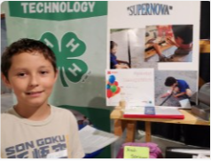
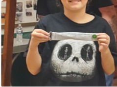
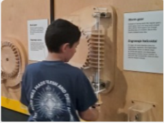

Biography

James is a 12-year-old boy living in a small town in Nebraska. His favorite color is black because when he wears it, he feels like he can blend in with his friends as he doesn’t like to be the center of attention. In school the subject he looks forward to the most is PE as he gets to use his body and make it stronger. He isn’t a fan of language arts because a lot of the time they ask follow-up questions that he finds hard to answer. When not in school he enjoys playing video games, art, swimming, and digging holes in the area where we took a tree out of the yard. Right now, he is enjoying Minecraft and fortnight with his friends.

When it comes to dinner time his go-to meal would be a good hamburger with asparagus. For dessert he would eat a piece of black-tie mousse cake or a Reese’s Take 5 candy bar. If he has to have a healthy desert his go-to would be raspberries.

His best vacation was when he went to Disney World in Florida. He really enjoyed the vacation because he got to go on his first rollercoaster and got to eat lots of different foods. The rides he would really like to go on again are the tea cups, space aliens from Toy Story, and Guardians of the Galaxy.
For his future he would like to go to school for mechanical engineering as he wants to be able to build and create new items that will help people. This goal leads to his favorite super hero, Iron Man. He likes Iron Man because he is really smart, can build really cool robots, and he want to help people.
One day he would like to live in a country house possibly by a river and surrounded by a forest. He would like to be surrounded by nature.
If he could meet someone past or present, he would have like to meet and talk with Jesus to ask him questions about why somethings are the way they are and about other places in the galaxy.
Lastly if he could visit anywhere in the world, he would like to visit Japan to try their sushi and see if it is any different then ours. He would also like to view the big Pokémon/anime store they have in Tokyo.